概述
Linux TypeC功能介绍，总结详细，看着一篇就够。
参考
USB Type-C Spec R2.1 - May 2021.pdf
TypeC 基本特性
正反插
速度快 10Gbps
但不支持Dual Role功能，及power、data是绑定的，不能独立协商。
Type-C Port的Data Role、Power Role
2.1 Type-C的 Data Role
在USB2.0端口，USB根据数据传输的方向定义了HOST/Device/OTG三种角色，其中OTG即可作为HOST，也可作为Device，在Type-C中，也有类似的定义，只是名字有了些许修改。如下所示：
（1）DFP(Downstream Facing Port)：
下行端口，可以理解为Host或者是HUB，DFP提供VBUS、VCONN，可以接收数据。在协议规范中DFP特指数据的下行传输，笼统意义上指的是数据下行和对外提供电源的设备。其中DFP-U表示USB的Host,DFP-D表示DP的Source
（2）UFP（Upstream Facing Port）：
上行端口，可以理解为Device，UFP从VBUS中取电，并可提供数据。典型设备是U盘，移动硬盘。其中UFP-U表示USB的Device,UFP-D表示DP的Sink
（3）DRP（Dual Role Port）：请注意DRP分为DRD(Dual Role Data)/DRP(Dual Role Power)
双角色端口，类似于以前的OTG，DRP既可以做DFP(Host)，也可以做UFP(Device)，也可以在DFP与UFP间动态切换。典型的DRP设备是笔记本电脑。设备刚连接时作为哪一种角色，由端口的Power Role（参考后面的介绍）决定；后续也可以通过switch过程更改（如果支持USB PD协议的话）。
2.2 Type-C的Power Role
根据USB PORT的供电（或者受电）情况，USB Type-C将port划分为Source、Sink等power角色
如下图显示常用设备的Data Role和Power Role
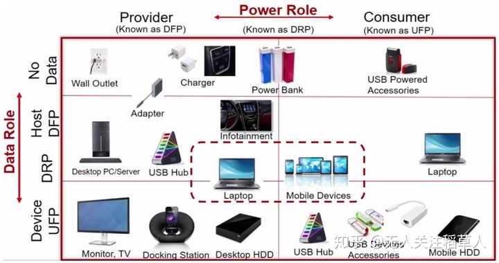
Power Role 详细可以分为：
a）Source Only
b）默认Source，但是偶尔能够通过PD SWAP切换为SINK模式
c）Sink Only
d）默认SINK，但是偶尔能够通过PD SWAP切换为Source模式
e）Source/SINK 轮换
f）Sourcing Device （能供电的Device，显示器）
g）Sinking Host（吃电的Host，笔记本电脑）
硬件引脚定义
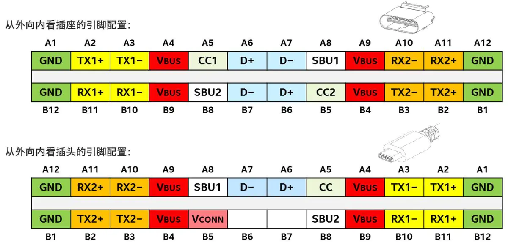
VBus：总线电源，USB PD协议可配置电压，最大20V 5A,Vbus 电源 和 GND 都有 4 个，这也是为何可以达到 100W 的原因。
GND：地线
TxRx：Tx1 Rx1 Tx2 Rx2 两组数据传输信号，USB3.1标准
CC：CC1和CC2，两个关键引脚，作用很多：
区分正反面
区分 DFP （Host）和 UFP（Device）
配置 VBUS，有 USB TypeC 和 USB Power Delivery 两种模式
配置 Vconn，当线缆中有芯片时，一个 CC 传输信号，一个 CC 变成供电 Vconn
配置其他模式，比如接音频时、dp时、pcie时 等等。
探测连接，区分正反面，区分DFP和UFP，也就是主从（虽然typec支持正反插，但typec的点定义并不完全对称，比如Rx1，翻转插头再插入就是Rx2，所以需要系统识别插头的正反插情况，用来正确配置Tx和Rx的连接通讯，虽然定义里有CC1和CC2，但是线缆里只有一根cc线，正反插可以连接不同的引脚，通过读取上下拉电平，从而识别插头的方向）；
配置Vbus，有USB Type-C和USB Power Delivery两种模式；
配置Vconn，当线缆里有芯片的时候，一个cc传输信号，一个cc变成供电Vconn，用来给线缆里的芯片供电（3.3V或5V）；
配置其他模式，如接音频配件时，DP，PCIe时；
D+D-：用来兼容USB2.0协议的数据传输，音频复用时也是L R信号
SBU：复用引脚，和usb协议本身关系不大，复用为其他端口时使用
为什需要CC检测
主要原因是如果信号线还是被简单地一分二的话，不连续的信号线阻抗将严重破坏数据传输质量，因此必须由MUX切换来保证信号路径阻抗的一致性，以确保信号传输质量。
虽然USB Type-C插座和插头的两排管脚对称，USB数据信号都有两组重复的通道，但主控芯片通常只有一组TX/RX和D+/-通道（某些芯片有两组TX/RX和D+/-通道）。
由于USB2.0的数据率最高只有480Mbps, 可以不考虑信号走线的阻抗连续性，USB2.0的D+/-信号可以不被MUX控制而直接从主控芯片走线，然后一分二连接至USB Type-C插座的两组D+/-管脚上。
但USB3.0或者USB3.1的数据率高达5Gbps或者10Gbps，如果信号线还是被简单地一分二的话，不连续的信号线阻抗将严重破坏数据传输质量，因此必须由MUX切换来保证信号路径阻抗的一致性，以确保信号传输质量。
下图中右侧所示的MUX从TX1/RX1和TX2/RX2中选择一路连接至主控芯片，而这个MUX就必须被CC管脚控制。
在USB2.0应用中，无需考虑CC方向检测问题，但USB3.0或者USB3.1应用中，必须考虑CC方向检测问题。
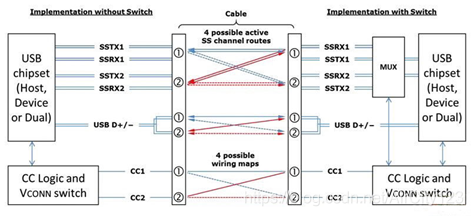
Type-C和PD有什么区别
在日常生活中，经常会有小伙伴将USB PD快充 与 Type-C接口混为一谈，或者将PD快充接口叫成Type-C 接口，其实这种认识是完全错误的。USB PD是一种快充协议，而Type-C接口是一种USB接口外形标准，两者完全不是一个概念！
PD是指传输协议，Type-c是指接口。
PD协议是目前的快充协议之一，是由USB-IF组织制定的一种快速充电规范。USB PD透过USB电缆和连接器增加电力输送，扩展USB应用中的电缆总线供电能力。该规范可实现更高的电压和电流，输送的功率最高可达100瓦，并可以自由改变电力的输送方向。目前该快充协议发展至今已有多个版本，包括PD2.0 / PD3.0 / PD3.1等。其中，最新版本USB PD3.1，相较USB PD3.0最大的区别是在输出 20V 电压的基础上，新增了 28、36、48V 三组输出电压档位，将 USB PD 3.0 最大输出的 100W 功率提升到 140W、180W 和 240W，让接口可以承载更高的功率，从而服务更大功率的设备，如游戏本、家电，甚至是电动工具、电瓶车等。
Type-C是充电接口，具备传统USB-A口不具备的多种优点，可以正反随插；能够支持USB3.1（Gen1和Gen2）、DisplayPort和USBPD等一系列新标准，最高速率可达10Gbps，Type-C端口默认最高可支持5V3A。
市场上Type-C/PD有哪几种分类？
市场上TypeC的产品种类很多，但真正全功能的很少。因为如果你把这个TypeC所有的功能都集成进去的话,这个口的整个的成本会变得非常贵。
实际上很多情况下，设备只是具备了TypeC的某一部分功能：
只有Type-C，即支持正反插，普通数据传输；
支持Type-C，支持PD协议，可快速充电；
支持Type-C，支持PD协议，支持高速信号，支持超快充电；
全功能，支持Type-C，支持PD协议，支持高速信号，支持超快充电，支持HDMI、DisplayPort等其他协议。
PD Dual Role功能
参考:
在还没有Type-C及Power Delivery（PD）问世前，传统的USB 世界里是没有Dual Role这个角色的，Data与Power 角色是非独立运作的，言下之意是作为Host 的一方必然成为DFP及Source，而作为Device的一方则为UFP及Sink。然而，Type-C PD的出现打破了这个规则，Data与Power 角色可以独立运作，作为DFP的角色可以成为Sink，反之，UFP也能成为Source。
本篇文章将为大家说明，在PD沟通协议的帮助下，USB Type-C 的Power和Data角色如何沟通及切换，也就是常听到的Power Role Swap（PR Swap）、VCONN Swap（VCONN Swap）、Data Role Swap（DR Swap）和Fast Role Swap （FR Swap）。
首先简单、快速地介绍一下Type-C角色的定义以及架构，分为Data及Power角色
Type-C Data角色定义
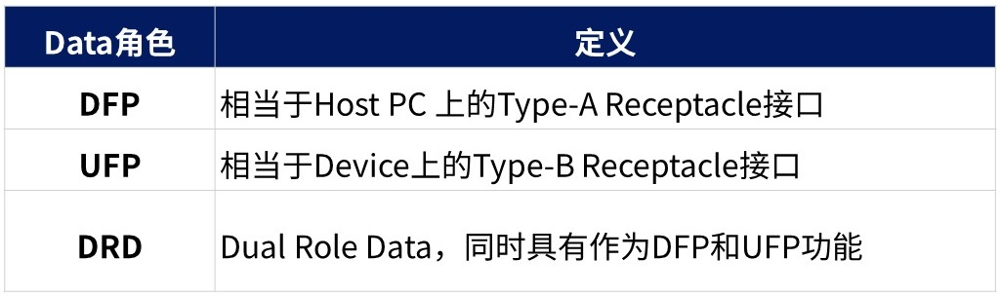
Type-C Power角色定义
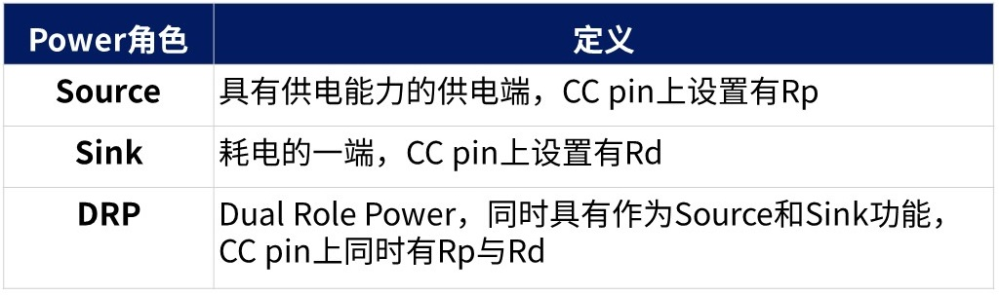
Power Role Swap功能介绍
当今天做PD沟通的两端皆为DRP时，若双方都没有Try.SRC或Try.SNK的能力（尝试作为SRC或SNK），那么当双方对接上后作为Source 或Sink的机率是随机的，所以在完成初步的PD协议后成为Source或是成为Sink 的一方可能并不是产品偏好的状态或是当前合适的角色，因此双方在完成初步的PD 协议后，会依据产品当下的电力状态（如Source/Sink Capability或有无External Power）及其产品偏好发起Power 角色调换的要求，即Power Role Swap（PR Swap）。
举例来说，一般情况下Type-C笔电通常会在对接刚完成后成为Source，但当笔电接上带有外接电源的Dock时，Dock或笔电经常会发起Power Role Swap。原因是大多数的笔电其Source Cap.只有15W且带有电池需要被充电，而Dock 的Source Cap.常是大于15W甚至是60W以上，所以当笔电电源不足或未接上笔电本身的电源供应器时，多数情况下Dock作为Source的能力会比笔电来的好，当然，这并不是绝对的，是否能够完成PR Swap，仍需视双方是否能够完成PR Swap 的协议来决定。
那么，谁能够负责发起PR_Swap的讯息呢？笔电还是Dock？Source还是Sink？答案是，Source和Sink 双方皆可。但收到PR_Swap 要求的一方也可以视自身能力和当前状况响应「接受（Accept）」、「拒绝（Reject）」或「等待（Wait）」的讯息来决定是否进行PR Swap的动作。
下图我们以Sink发起PR_Swap讯息为例，说明PR Swap 一连串的过程及PD规范中对于PR Swap时CC切换和VBus电压转换的流程，图三则是利用GRL-A1记录下VBus在PR Swap 过程的变化: 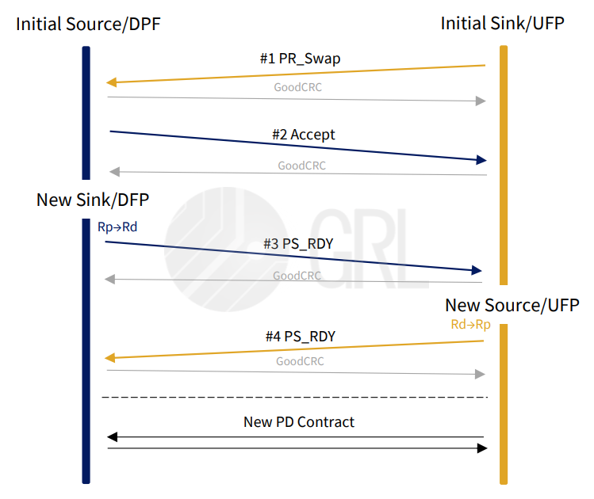 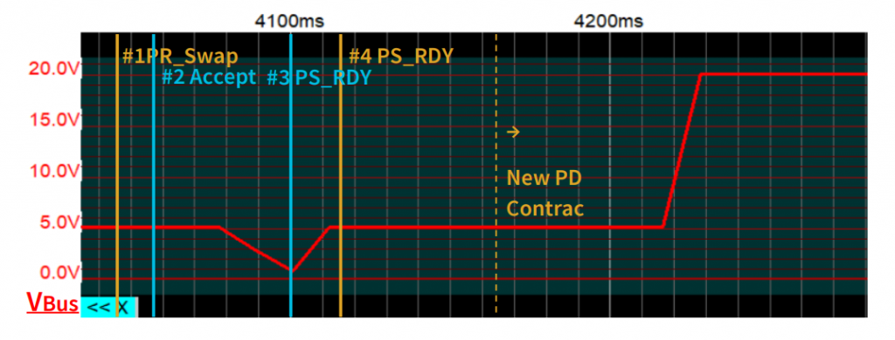
PR Swap流程图说明：
#1 Sink 在发起PR_Swap后，
#2、#3 Source接受PR Swap后发出Accept 的讯息并将CC Pin上的Rp切换到Rd后发出PS_RDY成为New Sink。假如初始Source 不接受PR Swap或是正在忙碌需要Sink 等待，则可在收到PR_Swap的请求后分别发出Reject 和Wait的讯息。
#4当初始Sink 收到从New Sink发出的PS_RDY后，原始Sink 也会将Rd切换到Rp成为New Source并发出PS_RDY，此时，PR Swap基本上就完成了。 最后New Source 会再发出新的Source Cap.与New Sink完成新的PD协议。
对于Source、Sink电压转换、切换时间规范，可以参考下图四和和表二，在PD测试规范中明确规范了Initial Source 的VBus在收到Initial Sink对Accept讯息发出的GoodCRC后，要在tSrcTransition时间开始切换到standby 状态，并在tSrcSwapStdby (t2) 时间降至0V，切换成New Sink，最后发出PS_RDY从而启动PSSoucreOnTimer。而Initial Sink 在收到Accept讯息后，启动PSSourceOffTimer，在Initial Soure切换到Standby之前关掉电流的拉载，并在收到New Sink 的PS_RDY后停止PSSourceOffTimer，转换成为New Source，最后在tNewSrc(t3)时间重新上电回到Vsafe5V发出PS_RDY。New Sink收到NewSource发出的PS_RDY后回GoodCRC，New Source便可开始新的PD 协议。
PD Spec. 规范Sink 要求PR Swap 的切换流程：
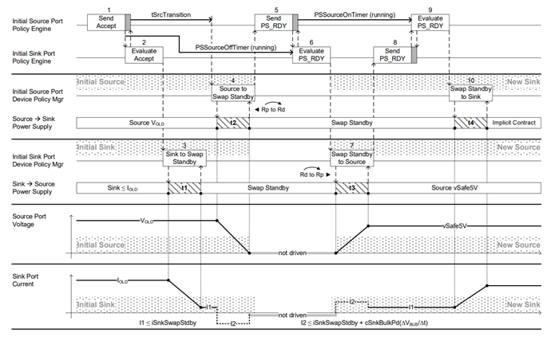
PR Swap时间参数：
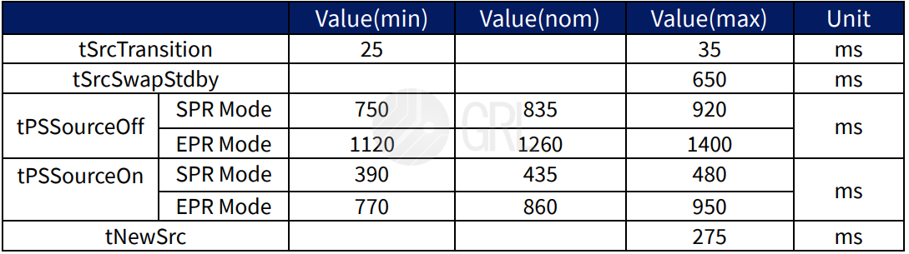
值得留意的是，在整个PR Swap的过程中，我们完全没有提到Data和VCONN的角色，因为Data的角色及VCONN Source并不会因PR Swap而改变，即使VBus会因PR Swap的过程将VBus切断再重新上电，但PD重新沟通后的Data和VCONN皆不会因为PR Swap对调而改变。意即，若一开始为DFP，那么在PR Swap过后，DFP仍为DFP，VCONN Source的一方仍为VCONN Source。
Data Role Swap功能介绍
了解Power Role的角色转换之后，接着我们看到Data角色的转换，Data Role Swap （DR Swap）同样是利用PD协议来完成。那么为什么需要DR Swap呢？因为对于DRP 的Data角色来说，双方一对接上，并在完成第一次的PD协议之前，随机成为Source的一方会预设为DFP，反之，Sink则为UFP，所以当初步的PD协议完成后，产品一样也可以依照需求提出DR Swap的要求。
DR Swap的整个流程相对于PR Swap来说简单的多，要留意的是，若收到DR_Swap Requst的当下，DFP/UFP已进入任一Active Mode，那么在进行DR Swap前需先执行Hard Reset使双方离开Active Mode 再重新PD 协议，若Cable也在Active Mode时，则Cable也需先离开Active Mode。
那DR Swap过程对于VBus、VCONN有影响吗？除非双方已进入Active Mode 所以在DR Swap前需要进行Hard Reset 的动作，否则，VBus 、VCONN在DR Swap的过程中是不会中断的，亦即VBus 会维持供电，CC上的Rp、Rd也不会调动。
Fast Role Swap功能介绍
最后介绍Fast Role Swap（FR_Swap），FR Swap 其实也是一种PR Swap，只是FR Swap是发生在较紧急的状态下需要快速的切换Power 角色，因此整个流程会跟PR Swap有些许的不同。
举例来说，下图是一般状态下Host、Dock、Device的连接状态，Dock作为Host 和Device一开始的Source供电来源（Initial Source），但Dock本身的电源突然断了，此时为了维持Device的连接及数据的传输，Host和dock之间便会进行FR Swap的动作，使Host快速地成为Source。
另外，并非所以市售产品都支持FR Swap，要能够进行FR Swap的先决条件必须连接双方都支持此项功能，FR Swap才得以进行。
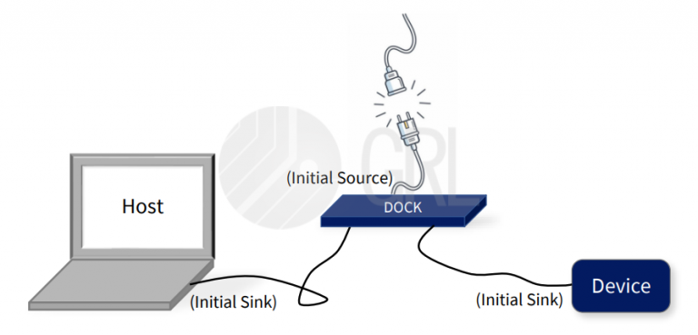
下图可以完整的了解到整个FR Swap 的流程。当Dock侦测到电压下降，会随即发出一个Fast Role Swap signal，Host 接收到讯号后，便会传送FR_Swap的讯息用以完成Source 和Sink 角色的交换，后面的沟通流程大致与PR Swap相同。除了在Role Swap讯息沟通前会有一个Fast Role Swap Signal外，FR Swap与PR Swap 最大的不同， 可以说是VBus的切换时间， 若原先Dock与Host之间的VBus电压 >5V，那么当Sink 发现VBus < VSafe5V时，Sink随时都会供给VBus电源，即便此时的Sink 尚未完成FR Swap的 PD 沟通成为Source，Sink（Host）在此时为了维持与Dock之间的连接以及和Device的数据传输而紧急供给VSafe5V。
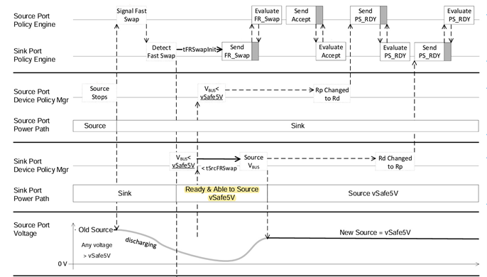
总结
Role Swap的设计给予Type-C Power和Data角色转换更大的弹性，即便连接上时有Source为DFP、Sink为UFP的预设角色，双方仍可以根据当下的连接状态重新沟通决定Power/Data的角色，且不会因为Power/Data Role Swap而改变 Data/Power的角色。
CC正反方向确认
CC信号有两根线，CC1和CC2，大部分USB线（不带芯片的线缆）里面只有一根CC线，DFP可根据两根CC线上的电压，判断是否已经插入设备。通过判断哪根CC线上有下拉电阻来判断方向，下图的说明已经非常清晰。
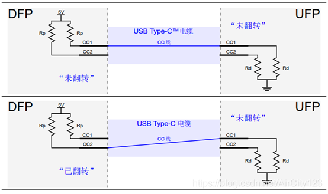
如果CC1引脚检测到有效的Rp/Rd连接（对应的电压），则认为电缆连接未翻转。
如果CC2引脚检测到有效的Rp/Rd连接（对应的电压），则认为电缆连接已翻转。
“有效的Rp/Rd连接”指在CC上形成了有效的电压。从DFP的角度看，下表列出了所有可能的连接状态，
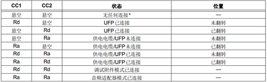
DFP（下行端口）为主机端口，UFP（上行端口）为设备端口。如图所示，在DFP上有两个CC引脚，DFP通过检测三种不同形式的UFP端下拉电阻（Open开路、Ra=0.8-1.2K、Rd=5.1K）来识别各种配置模式。
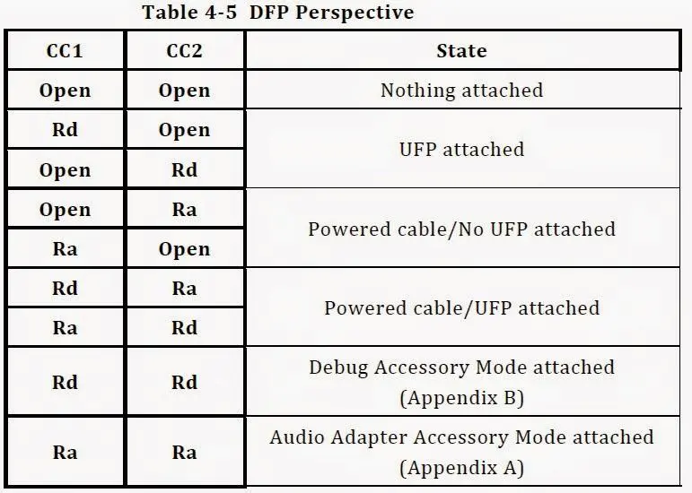 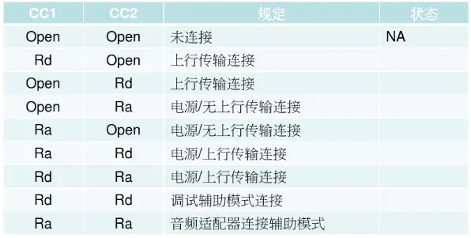
TypeC 如何确定供电能力
在没有供电协议(PD)功能时，Type-C接口可以提供5V的电压和900mA、1.5A或者3A的电流。供电方通过Rp上拉电阻值代表不同的电流能力，当连接上耗电方后，耗电方通过检测Rp的值就能确定供电方能够提供的电流能力。在有供电协议功能时，Type-C接口可以提供更高、更灵活的供电能力，最高可提供20V、5A的供电能力。
DFP的上拉电阻Rp
Rp有6个参数（5V档位和3.3V档位各3个），指示着不同的供电能力。
DFP的CC1和CC2信号上都必须有上拉电阻Rp，上拉到5V或3.3V。或者CC1和CC2都用电流源上拉。最终的目的是在插入后，能检测到CC1或CC2上的电压，进而判断是否翻转以及DFP的电流能力。如下是所有可能的配置。可以选择右边三列中的任何一列作为上拉方式，比如Fairchild的FUSB300就是用330uA上拉，TI的TUSB320LAI用的是80uA的上拉，不同的上拉方式在CC引脚上形成的电压不同，不同的电压对应不同的电流能力。
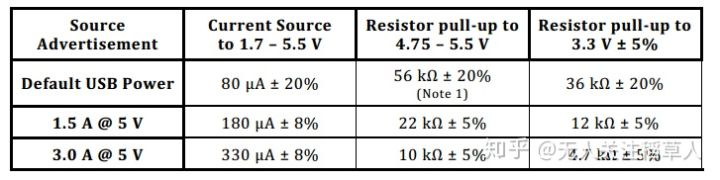
UPF的下拉电阻Rd
UFP的CC1和CC2管脚都要有一个下拉电阻Rd到GND（或者使用电压钳位），都是5.1K电阻下地，能否检测电源供电能力，取决于电阻的精度。Rd的处理方式如下表：
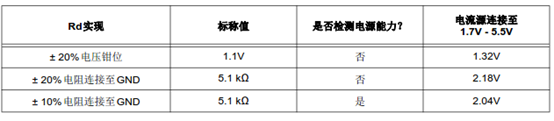
注意，最后一列的电流源连接至的电压，是指3.1节中表格的最后一列电流源的上拉电压。 结合这个表格，和3.1节的表格，我们把每种可能的上下拉范围都计算出了最终形成的电压范围，如下表（这个表算错了）。
举例来说，当DFP给CC引脚提供330uA的电流时，CC引脚上电压则为330uA * 5.1kOhms = 1.683V。根据下表，DFP则被识别为vRd-3.0标准。当DFP用10k电阻把CC引脚上拉至4.75~5.5V时，这里算成5v,CC引脚上的电压则为5/(10+5.1)*5.1=1.688V，DFP也会被识别为vRd-3.0标准。
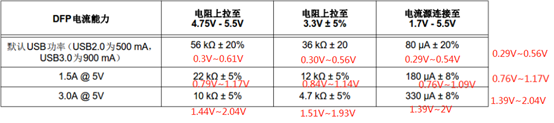
UFP CC检测芯片会检测这个电压，通过判断电压范围来决定下一步操作。下表是CC管脚上不同的电压对应的DFP能提供的电流能力。第二列列出的每一种电压范围，都分别覆盖了上表计算出的电压。Rp/Ra的计算是同理的。
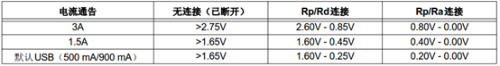
VCONN电源
VCONN的允许范围是4.75V~5.5V，要求供电能力是1W。默认情况下DFP提供这个电源。如果两个DRP连接，则双方可以通过USB PD协议协商来交换VCONN供电方。 支持PD的USB3.0接口均需支持VCONN，可以通过下面两种方式之一提供VCONN电源。
如果其中一个CC引脚上检测到有效的Rp/Rd连接，则VCONN电源可以接到另一个对应的CC引脚。
如果其中一个CC引脚上检测到有效的Rp/Rd连接，先检查另一个CC引脚是否也有Rp/Ra连接，然后再提供VCONN。
先检测是否有Ra存在，如果有说明需要Vconn供电，此时再提供Vconn。检测过程不需要Vconn存在。
注意，每一个CC引脚内部都有一个开关，轮训CC和VCONN功能，下图是一个典型的连接方式：
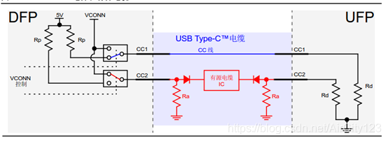
数据线上的Ra
带电子标签的线缆，其中一个CC管脚被更名为VCONN，用于给电子标签芯片供电。这个VCONN管脚与GND之间需要一个Ra电阻，这个电阻值范围是800Ω~1.2KΩ。
举例
最初的时候，源端插座上的CC1和CC2都被电阻Rp上拉至高电平，吸端的CC1和CC2都被下拉电阻Rd下拉至低电平。
电缆接通以后，CC1或CC2根据电缆的插入方向而被上拉至较高电压。本案中的电缆没有处于扭转状态，源端的CC1和吸端的CC1之间被接通，CC1上出现由Rp和Rd分压以后的电压，此电压将由吸端进行测量并由此知道源端的电流供应能力是多少。
在此案例中，接通以后的CC1的电压大约是1.65V，意味着源端最大能供应3A电流。
CC线的连接被确定以后，VBUS上的5V电压将被接通。
在不含电源传输协议的系统中，总线上的电流供应能力由分压器Rp/Rd确定，但源端只会供应5V电压。
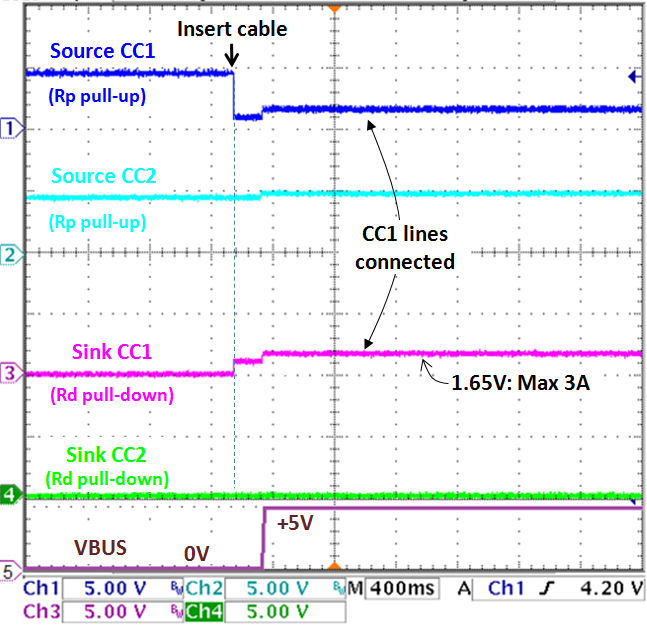
TypeC 如何确定充电方向
TypeC 设备有三种形式：
DFP（Downstream Facing Port）：只能作 Source（Host），CC线上拉电阻Rp，比如充电器。
UFP（Upstream Facing Port）：只能作 Sink（Device），CC线下拉电阻Rd；比如 U盘、鼠标、键盘、老款的手机（UFP TypeC 头的手机）。
DRP：两者都可以作。通过switch切换Rp Rd，比如新款的手机（DRP TypeC头的手机），平板，笔记本。
所以，如果我们手上有一个 TypeC 的手机，有可能有两种情况：
手机上是 UFP 的 C 母头。无论是接到充电器还是电脑，都会被充电。
手机上是 DRP 的 C 母头。
2.1 插到充电器，因为充电器只能作 DFP，所以手机会切换为 UFP，进而被充电
2.2 插到笔记本、另一台手机 或是 充电宝：
2.2.1 手机、电脑、充电宝 会随机当 host 和 sink，每次插拔后角色互换（前提是支持 PD 协议）
2.2.2 手机、电脑、充电宝 有一方有作为 host 端的偏好设定。此时有偏好设定的一方会称为 host 端。
注：偏好设定是最新的 TypeC 规范中对 DRP 部分的描述，新增了两种类型：
DRP try source：和DRP或者DRP try sink相连时，会连成Source。
DRP try sink：和DRP或者DRP try source相连时，会连成sink。
接下来是几种角色端口的交互行为。
source连接状态图：
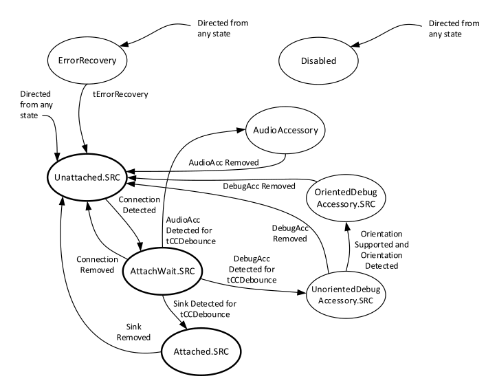
sink连接状态图：
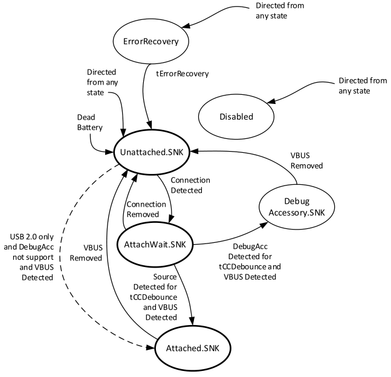
DRP连接状态图：
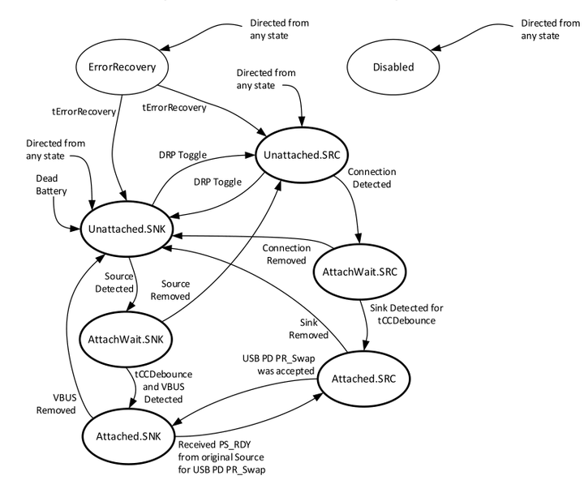
Source 到 Sink
参考spec
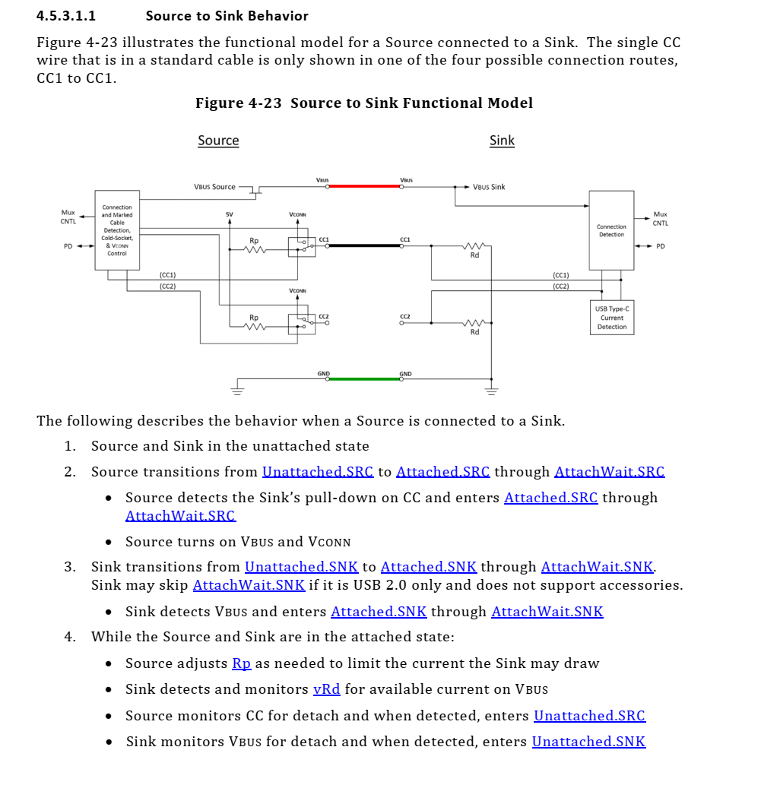
source 端状态：
1.有CC时，插入typec时Unattached.SRC -> AttachWait.SRC，source通过CC检测到sink的下拉电阻Rd后，从状态AttachWait.SRC变成Attached.SRC:
Unattached.SRC -> AttachWait.SRC -> Attached.SRC
2.没有CC，usb2.0没有AttachWait.SRC状态：
Unattached.SRC -> Attached.SRC
3.拔出检测到CC悬空：
Attached.SRC -> Unattached.SRC
第一步，Source和Sink在Unattached状态
第二步，Source通过CC检测到Sink的Rd，经过AttachWait.SRC进入Attached.SRC。Source并打开VBUS和VCONN。
第三步，Sink从Unattached.SNK经过AttachWait.SNK转为Attached.SNK。USB2.0不支持附件模式，直接跳过AttachWait.SNK状态，该过程是通过检测VBUS完成。
第四步，当Source和Sink在Attached状态了，Source调整Rp值限制Sink拉的电流，Sink检测和监视vRd看VBUS可用的电流，Source监视CC的Detach行为进入Unattached.SRC，Sink监视VBUS的Detach行为进入Unattached.SNK。
sink 端状态：
1.有CC时，插入typec时Unattached.SNK -> AttachWait.SNK，SINK通过检测到有效的vbus，从状态AttachWait.SNK变成Attached.SNK:
Unattached.SNK -> AttachWait.SNK -> Attached.SNK
2.没有CC，usb2.0没有AttachWait.SINK状态：
Unattached.SNK -> Attached.SNK
3.拔出检测到vbus关闭：
Attached.SNK -> Unattached.SNK
简单描述一下就是，source和sink通过typec连接后，source通过CC检测到sink的下拉电阻Rd，认为有sink连接，source打开VBUS和VCONN（在另一条CC上），双方建立连接，并且source可以通过调整上拉电阻Rp的大小来控制vRd的电压值，sink通过检测vRd的大小从而得知sink能从vbus上拉多大的电流。
Source 到 DRP
引用TypeC SPEC：
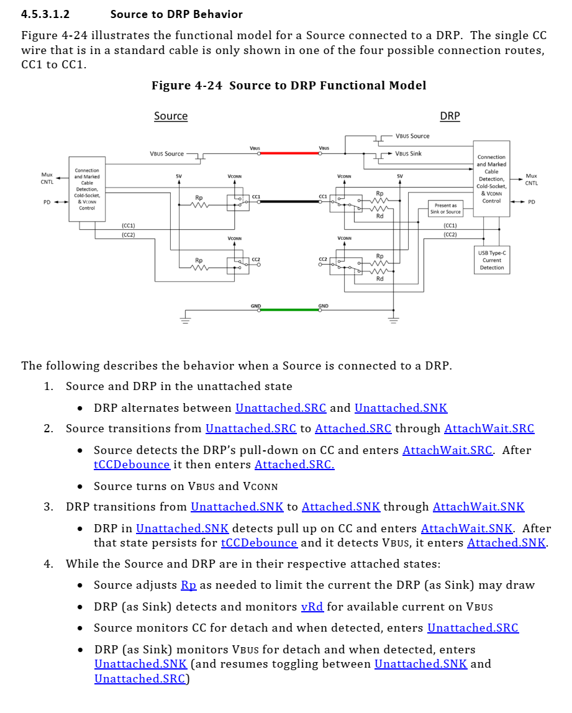
DRP在未建立连接前，会不断切换连接上下拉电阻Rp和Rd（具体切换细节在下面分解）。
source和DRP通过typec连接后，在DRP连接Rd时，source通过CC检测到Rd，之后打开VBUS和VCONN；DRP检测到source的Rp，之后等source打开Vbus后，确认转换为sink，并正式建立连接。
DRP 到 Sink
情况与上一种情况类似，不再赘述。
DRP 到 DRP
1.两个DRP端口相连怎样分配role
现实中，我们的手机都是DRP，既能做DFP，又能做UFP，那么是如何切换呢？
DRP在待机模式下每50ms在DFP和UFP间切换一次。当切换至DFP时，CC管脚上必须有一个上拉至VBUS的电阻Rp或者输出一个电流源，当切换至UFP时，CC管脚上必须有一个下拉至GND的电阻Rd。此切换动作必须由CC Logic芯片来完成。当DFP检测到UFP插入之后才可以输出VBUS，当UFP拔出以后必须关闭VBUS。此动作必须由CC Logic芯片来完成。下面是一个CC逻辑芯片框图，CC上有一个开关，在不断切换功能。
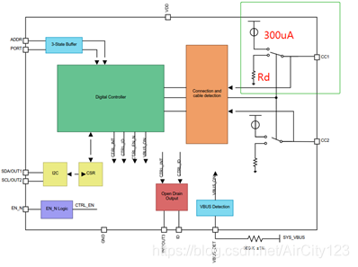
此为某手机内部CC Logic芯片的内部框架图，可以看到CC Pin内部有个开关在RP与RD切换。
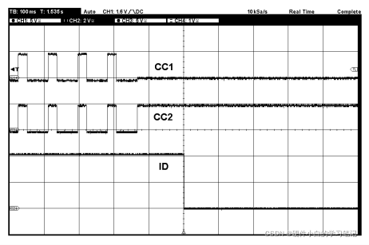
2.疑问：是否会出现两个DRP切换周期一直同步而导致的配对过程无限fail的情况
此种情况最为复杂，因为DRP也可以分为三种角色，普通DRP，DRP try source，DRP try sink，即有些DRP，在DRP之间的连接中，会有prefer的角色，比如笔记本和手机，肯定都是DRP，但是笔记本可能会设定为try source，因为笔记本毕竟电池容量比较大，如果将笔记本和手机相连，最好还是笔记本作为source给手机充电，而不要反过来，但是笔记本与墙插充电器相连时，笔记本肯定是sink。
在typec spec中，DRP和DRP相连的行为中，提到了3个case，case2和case3就是有一方DRP是try source或try sink的情况，这两种情况比较复杂，这里不展开了，有兴趣可以详细查阅，这里只给出case1，两个普通DRP之间相连的情况。
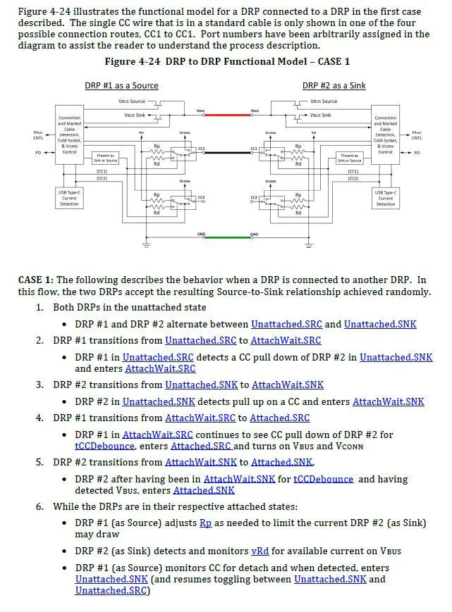
未正式建立连接时，两个DRP都在各自不断切换上下拉电阻，当有一时刻，DRP1是上拉电阻，DRP2是下拉电阻状态，然后接下来就和Source 到 Sink的情况是一样的。因为两个DRP状态是不断切换的，所以连接时刻的DRP各自的状态就决定了连接后的主从关系，当然如果某一时刻两个DRP都是上拉或下拉，那连接行为最终会失败，DRP重新进入不断切换状态等待连接。
那是否会有一种极端情况，两个DRP切换状态太同步了，一直是同上拉，同下拉，那这两个DRP是不是就一直不能连接了，这就涉及到了DRP切换周期的问题。
还是回溯到SPEC中：
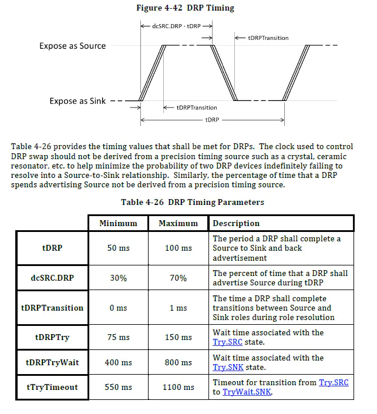
可以看出，SPEC定义了DRP 切换source和sink的一个完整swap周期为tDRP，其中dcSRC.DRP为整个周期中DRP作为source的百分比。SPEC明确说明了，用于控制这个周期和百分比的时钟，不能来自于一个特别准确的时钟源如晶振或陶瓷晶振等，以此来最小化两个DRP在配对过程中出现无限失败的问题。而对于各周期的上下限也非常宽裕，所以实际情况下各DRP的周期会不尽相同，不会出现两个DRP切换周期一直同步而导致的配对过程无限fail的情况。
所以结论是，两个DRP连接结果是主从随机的，这也符合我一开始用两台手机试验的结果。
带电子标签的Type-C数据线
如果Type-C数据线上带了芯片（我们称之为电子标签），这个芯片可以通过USB供电规范2.0 BMC协议与USB端口通信。电子标签电缆可用VCONN供电，也可以直接由Vbus供电，最高可消耗70mW的功率。如下类型的电缆必须要电子标签：
兼容USB3.1的USB Type-C电缆。
100W供电电缆。能够实现60W以上功率承载能力的任何电缆都必须有电子标签，并且能够与DFP端口通信。带电子标签的电缆如果插入不支持USB供电规范2.0的插座中，其行为与标准的无源电缆完全相同。
音频设备
当CC1和CC2引脚同时使用Ra下拉时，主机将把设备识别成音频设备，然后从USB信号切换至音频信号。
Host端如何识别到音频模式呢？把CC引脚和VCON连接，并且下拉电阻小于Ra/2(则小于400ohm)，或者分别对地，下拉电阻小于Ra(小于800ohm)，则Host会识别为音频模式。
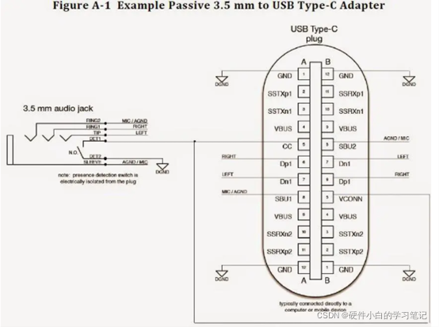
从图中也可以同时看出来，接入音频设备时，Dp接入耳机的右声道，Dn接入耳机的左声道。SBU则连接至MIC。
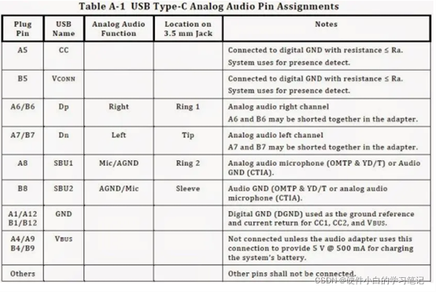
数字耳机
Type-C接口的数字耳机是一个UFP（Device），手机是DFP。耳机的CC1和CC2引脚上必须有Rd，实际上，乐视数字耳机的CC管脚上有一颗5.1K电阻。
模拟耳机
协议要求模拟耳机转接线上把两个CC引脚直接接到GND（必须小于Ra）。
DP 模式 和 PCIe 模式
在USB3.2 Gen1和Gen2 中，他们使用一组两个差分对四根线分别实现 5Gbps 和 10Gbps 的收发活动即SSTX 差分对和SSRX 差分对。
因此在USB中 一组收发 可以实现 10Gbps的 双向传输，USB3.2 Gen2x2可以启用两组共四对信号，因此可以实现 20Gbps 双向传输（是的，Gen2不需要D+D-来传输，Gen2 跟 Gen2x2 只是量变，Gen1 到 Gen2 才是质变，而只使用D+D- 的USB2.0则跟USB3.0可以算是两个物种了）
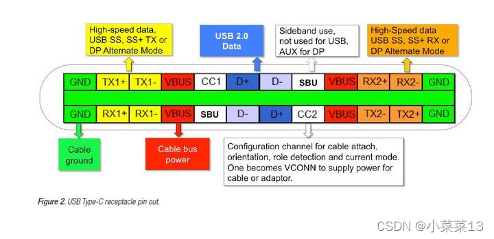
DP接口
一个完整的DP接口同样含有4对主要连接差分对，Mian Link Lane 0~3 (以下简称ML）
在HBR2下可以完成 每Lane 5.4Gbps的单向传输，HBR3下则是8.1Gbps
除此之外，DP接口还内置了Configuration 1&2 用于协议配置，Auxiliary Channel +&- （以下简称Aux对）用于音频传输，有趣的是，DP同样可以在仅 ML0，ML1 两条Lane的模式下工作。 USB PD是在CC(Configuration Channel) pin上传输，PD有个VDM (Vendor defined message)功能，定义了装置端ID，读到支持DP或PCIe的装置，DFP就进入替代（alternate）模式。
USB Type-C & DisplayPort
如果DFP认到device为DP，便切换MUX/Configuration Switch，让Type-C USB3.1信号脚改为传输DP信号。AUX辅助由Type-C的SBU1,SUB2来传。HPD是检测脚，和CC差不多，所以共用。
而 DP 有 lane0-3 四组差分信号， Type-C 有 RX/TX1-2 也是四组差分信号，所以完全替代没问题。而且在 DP 协议里的替代模式，可以 USB 信号和 DP 信号同时传输，RX/TX1 传输 USB 数据，RX/TX2 替换为 lane0,1 两组数据传输，此时可支持到 4k。
（1）DP Alt Mode 4Lane DP有lane0-3四组差分信号， Type-C有RX/TX1-2也是四组差分信号，所以完全替代没问题。
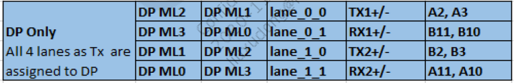
当激活成 DP Alt Mode 4Lane 时：
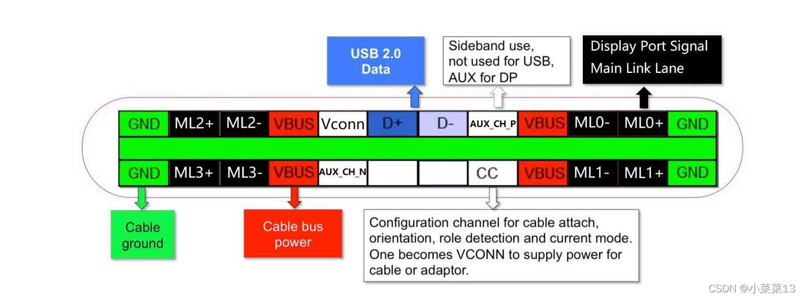
（2）DP Alt Mode 2Lane DP协议里的替代模式，可以USB信号和DP信号同时传输，RX/TX1传输USB数据，RX/TX2替换为lane0,1两组数据传输，此时可支持到4k。
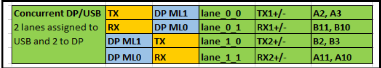
当激活 DP Alt Mode 2Lane （Multi-Function DisplayPort,MFDP) 时，针脚功能如下：
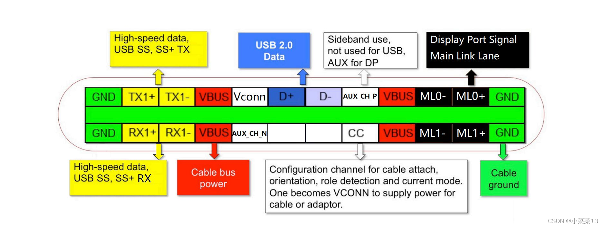
USB&DP Source & Sink 连接情况
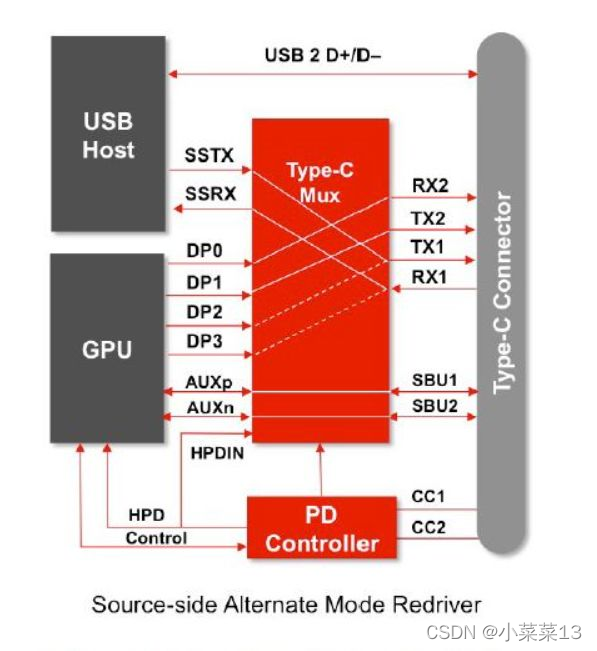 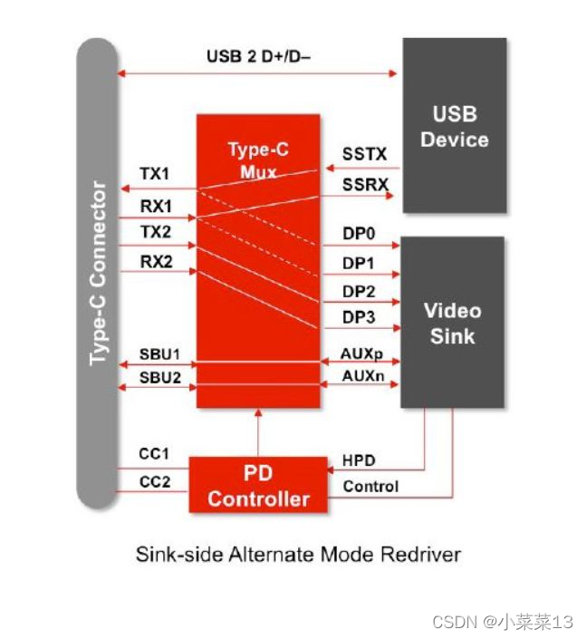 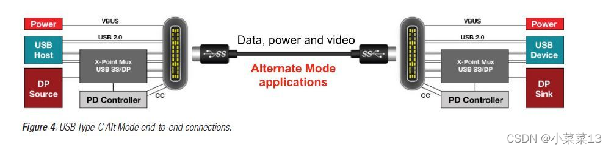
如果 DFP 认到 device 为 DP，便切换 MUX/Configuration Switch，让 Type-C USB3.1 信号脚改为传输 PCIe 信号。同样的，PCIe 使用 RX/TX2 和 SBU1,SUB2 来传输数据，RX/TX1 传输 USB 数据。这样的好处就是一个接口同时使用两种设备，当然了，转换线就可以做到，不用任何芯片。
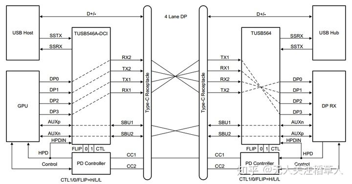
如何触发 DP Alt Mode
如上文提到的， 不管是DP Alt Mode 还是上面提到的 Virtual Link，抑或是雷电，都是作为Alt Mode 触发的，而触发方式，都是通过Power Delivery 的通信功能.
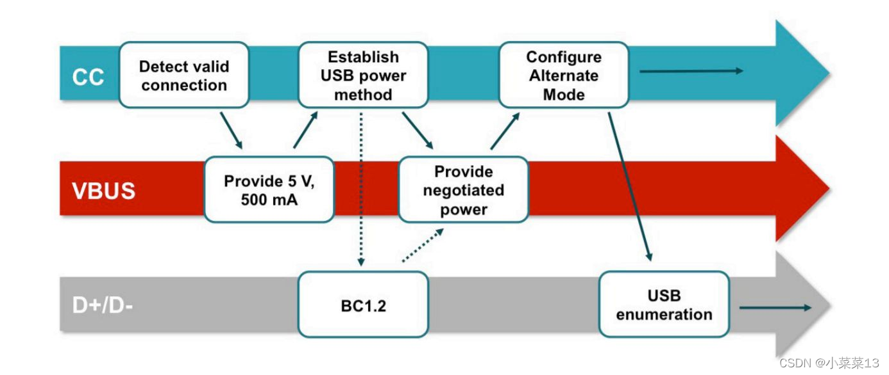
Type-C Alt Mode 大致配置流程如下：
1、USB 连接 通过CC侦测到
2、VBUS 引脚 提供默认电源配置 5V@500mA
3、VBUS 所需的额外USB电力传输可以进行协商，Battery Charge 1.2（BC 1.2）或USB PD 都可以选择
4、使用 结构化 供应商定义报文（VDM） 需要USB PD 来发送来协商 Alt Mode 握手
5、USB 枚举
6、如果 DP Alt Mode 协商已经完成，继续进行DP link training来建立DP连接
7、USB和DP频道准备就绪进行Type-C 数据和视频信号传输。
mux驱动实例（PI3USB30532）
PI3USB30532用于通过USB 3.0 Type-C连接器切换USB 3.0和/或DP1.2 (PIUSB30532)或USB 3.1 Gen1/Gen2和/或DP1.2/DP1.4 (PI3USB31532)信号。PI3USB30532复用USB 3.0的一个通道，USB 3.0的一个通道，和DP1.2的2通道或DP1.2的4通道到USB Type-C连接器。而PI3USB31532将USB 3.1 Gen1/Gen2的一个通道、USB 3.1 Gen1/Gen2的一个通道和DP1.2/1.4的2通道或DP1.2/DP1.4的4通道复用到USB Type-C连接器。此外，AUX/HPD通道也多路复用到c型连接器。PI3USB30532和PI3USB31532为高速信号和低功耗提供了良好的信号完整性。
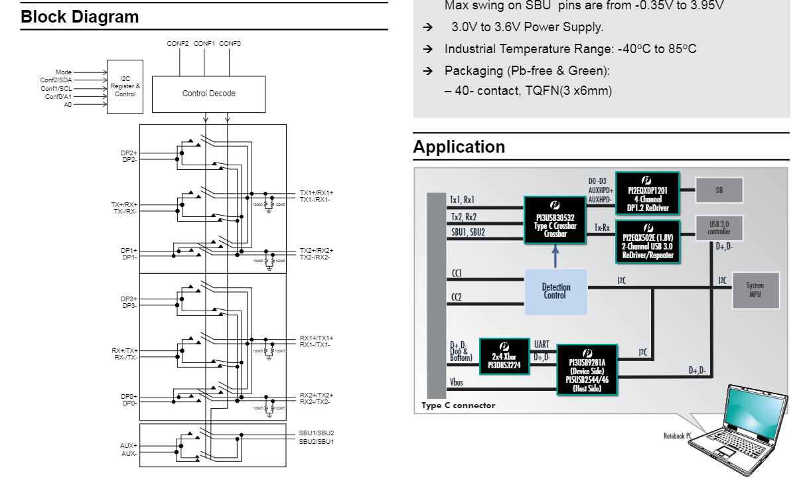
drivers/usb/typec/mux/pi3usb30532.c将接口pi3usb30532_mux_set;和pi3usb30532_sw_set注册到typec中，typec根据DP Alt Mode 协商后，使用该接口继续进行DP link training来建立DP连接。pi3usb30532_mux_set有四种配置：CONF_OPEN
CONF_USB3 （USB3.0）
4LANE_DP（DP Alt Mode 4Lane）
USB3_AND_2LANE_DP （DP Alt Mode 2Lane + USB）
pi3usb30532_sw_set有两种配置：CONF_OPEN
CONF_SWAP
static int pi3usb30532_set_conf(struct pi3usb30532 *pi, u8 new_conf)
{
int ret = 0;
if (pi->conf == new_conf)
return 0;
ret = i2c_smbus_write_byte_data(pi->client, PI3USB30532_CONF, new_conf);
if (ret) {
dev_err(&pi->client->dev, "Error writing conf: %d\n", ret);
return ret;
}
pi->conf = new_conf;
return 0;
}
static int pi3usb30532_sw_set(struct typec_switch *sw,
enum typec_orientation orientation)
{
struct pi3usb30532 *pi = typec_switch_get_drvdata(sw);
u8 new_conf;
int ret;
mutex_lock(&pi->lock);
new_conf = pi->conf;
switch (orientation) {
case TYPEC_ORIENTATION_NONE:
new_conf = PI3USB30532_CONF_OPEN;
break;
case TYPEC_ORIENTATION_NORMAL:
new_conf &= ~PI3USB30532_CONF_SWAP;
break;
case TYPEC_ORIENTATION_REVERSE:
new_conf |= PI3USB30532_CONF_SWAP;
break;
}
ret = pi3usb30532_set_conf(pi, new_conf);
mutex_unlock(&pi->lock);
return ret;
}
static int pi3usb30532_mux_set(struct typec_mux *mux, int state)
{
struct pi3usb30532 *pi = typec_mux_get_drvdata(mux);
u8 new_conf;
int ret;
mutex_lock(&pi->lock);
new_conf = pi->conf;
switch (state) {
case TYPEC_STATE_SAFE:
new_conf = PI3USB30532_CONF_OPEN;
break;
case TYPEC_STATE_USB:
new_conf = (new_conf & PI3USB30532_CONF_SWAP) |
PI3USB30532_CONF_USB3;
break;
case TYPEC_DP_STATE_C:
case TYPEC_DP_STATE_E:
new_conf = (new_conf & PI3USB30532_CONF_SWAP) |
PI3USB30532_CONF_4LANE_DP;
break;
case TYPEC_DP_STATE_D:
new_conf = (new_conf & PI3USB30532_CONF_SWAP) |
PI3USB30532_CONF_USB3_AND_2LANE_DP;
break;
default:
break;
}
ret = pi3usb30532_set_conf(pi, new_conf);
mutex_unlock(&pi->lock);
return ret;
}
static int pi3usb30532_probe(struct i2c_client *client)
{
struct device *dev = &client->dev;
struct typec_switch_desc sw_desc;
struct typec_mux_desc mux_desc;
struct pi3usb30532 *pi;
int ret;
pi = devm_kzalloc(dev, sizeof(*pi), GFP_KERNEL);
if (!pi)
return -ENOMEM;
pi->client = client;
mutex_init(&pi->lock);
ret = i2c_smbus_read_byte_data(client, PI3USB30532_CONF);
if (ret < 0) {
dev_err(dev, "Error reading config register %d\n", ret);
return ret;
}
pi->conf = ret;
sw_desc.drvdata = pi;
sw_desc.fwnode = dev->fwnode;
sw_desc.set = pi3usb30532_sw_set;
pi->sw = typec_switch_register(dev, &sw_desc);
if (IS_ERR(pi->sw)) {
dev_err(dev, "Error registering typec switch: %ld\n",
PTR_ERR(pi->sw));
return PTR_ERR(pi->sw);
}
mux_desc.drvdata = pi;
mux_desc.fwnode = dev->fwnode;
mux_desc.set = pi3usb30532_mux_set;
pi->mux = typec_mux_register(dev, &mux_desc);
if (IS_ERR(pi->mux)) {
typec_switch_unregister(pi->sw);
dev_err(dev, "Error registering typec mux: %ld\n",
PTR_ERR(pi->mux));
return PTR_ERR(pi->mux);
}
i2c_set_clientdata(client, pi);
return 0;
}
通过typec_mux_register和typec_switch_register注册mux和switch，drivers/usb/typec/mux.c:
/**
* typec_switch_register - Register USB Type-C orientation switch
* @parent: Parent device
* @desc: Orientation switch description
*
* This function registers a switch that can be used for routing the correct
* data pairs depending on the cable plug orientation from the USB Type-C
* connector to the USB controllers. USB Type-C plugs can be inserted
* right-side-up or upside-down.
*/
struct typec_switch *
typec_switch_register(struct device *parent,
const struct typec_switch_desc *desc)
{
struct typec_switch *sw;
int ret;
if (!desc || !desc->set)
return ERR_PTR(-EINVAL);
sw = kzalloc(sizeof(*sw), GFP_KERNEL);
if (!sw)
return ERR_PTR(-ENOMEM);
sw->set = desc->set;
device_initialize(&sw->dev);
sw->dev.parent = parent;
sw->dev.fwnode = desc->fwnode;
sw->dev.class = &typec_mux_class;
sw->dev.type = &typec_switch_dev_type;
sw->dev.driver_data = desc->drvdata;
dev_set_name(&sw->dev, "%s-switch", dev_name(parent));
ret = device_add(&sw->dev);
if (ret) {
dev_err(parent, "failed to register switch (%d)\n", ret);
put_device(&sw->dev);
return ERR_PTR(ret);
}
return sw;
}
EXPORT_SYMBOL_GPL(typec_switch_register);
/**
* typec_mux_register - Register Multiplexer routing USB Type-C pins
* @parent: Parent device
* @desc: Multiplexer description
*
* USB Type-C connectors can be used for alternate modes of operation besides
* USB when Accessory/Alternate Modes are supported. With some of those modes,
* the pins on the connector need to be reconfigured. This function registers
* multiplexer switches routing the pins on the connector.
*/
struct typec_mux *
typec_mux_register(struct device *parent, const struct typec_mux_desc *desc)
{
struct typec_mux *mux;
int ret;
if (!desc || !desc->set)
return ERR_PTR(-EINVAL);
mux = kzalloc(sizeof(*mux), GFP_KERNEL);
if (!mux)
return ERR_PTR(-ENOMEM);
mux->set = desc->set;
device_initialize(&mux->dev);
mux->dev.parent = parent;
mux->dev.fwnode = desc->fwnode;
mux->dev.class = &typec_mux_class;
mux->dev.type = &typec_mux_dev_type;
mux->dev.driver_data = desc->drvdata;
dev_set_name(&mux->dev, "%s-mux", dev_name(parent));
ret = device_add(&mux->dev);
if (ret) {
dev_err(parent, "failed to register mux (%d)\n", ret);
put_device(&mux->dev);
return ERR_PTR(ret);
}
return mux;
}
EXPORT_SYMBOL_GPL(typec_mux_register);
MTK log实例分析
1.M8项目DRP 到 DRP
前提：
cc电压状态有以下几个状态：
0代表CC1 6代表CC2
[CC_Change] 0/6
[CC_Alert] 0/6
enum tcpc_cc_voltage_status {
TYPEC_CC_VOLT_OPEN = 0,
TYPEC_CC_VOLT_RA = 1,
TYPEC_CC_VOLT_RD = 2,
TYPEC_CC_VOLT_SNK_DFT = 5,
TYPEC_CC_VOLT_SNK_1_5 = 6,
TYPEC_CC_VOLT_SNK_3_0 = 7,
TYPEC_CC_DRP_TOGGLING = 15,
};
vbus变化打印
打印如下：
TCPC-TCPC:ps_change=0 小于0.8v
TCPC-TCPC:ps_change=1 0.8~4.5v
TCPC-TCPC:ps_change=2 大于4.5v
log原文
以下是sink端log分析，主要分为以下几个过程：
<5>[92779.894626] .(6)[112:pd_dbg_info]<92779.894>TCPC-TCPC:Wakeup //打开timer
<5>[92779.894626] <92779.894>TCPC-TCPC:wakeup_timer
<5>[92780.042338] <92780.017>TCPC-TYPEC:** Try.SRC //尝试source
行 13997: <5>[92798.314323] <92798.310>TCPC-TYPEC:[CC_Change] 0/0
行 13999: <5>[92798.314342] .(4)[112:pd_dbg_info]98.311>TCPC-TYPEC:** Unattached.SNK //拔出状态，准备SINK
行 14000: <5>[92798.314342] <92798.311>TCPC-TYPEC:norp_src=1
行 14001: <5>[92798.314342] <92798.311>TCPC-TYPEC:Attached-> NULL(repeat)
行 14003: <5>[92798.314363] .(4)[112:pd_dbg_info]>TCPC-TYPEC:[CC_Alert] 15/15 //DRP翻转成SINK
行 14004: <5>[92798.314363] <92798.312>TCPC-TYPEC:[Warning] DRP Toggling
行 14005: <5>[92798.314363] <92798.313>TCPC-TCPC:ps_change=1 //vbus 0.8~4.5v
行 14023: <5>[92798.611818] .(4)[112:pd_dbg_info]<92798.611>TCPC-TYPEC:[Warning] DRP Toggling
行 14228: <5>[92814.025910] .(5)[112:pd_dbg_info]<92814.025>TCPC-TCPC:bat_update_work_func battery update soc = 96
行 14229: <5>[92814.025910] <92814.025>TCPC-TCPC:bat_update_work_func Battery Discharging
行 15118: <5>[92866.701853] .(5)[112:pd_dbg_info]<92866.701>TCPC-TCPC:Wakeup
行 15119: <5>[92866.701853] <92866.701>TCPC-TCPC:wakeup_timer
行 15121: <5>[92866.730338] .(5)[112:pd_dbg_info]<92866.702>TCPC-TYPEC:[CC_Alert] 2/0 //作为SINK端Rd下拉
行 15122: <5>[92866.730338] <92866.702>TCPC-TCPC:[Warning] ps_changed 1 ->0 //vbus电压小于0.8v
行 15123: <5>[92866.730338] <92866.703>TCPC-TYPEC:** AttachWait.SRC //等待source
行 15124: <5>[92866.730379] .(5)[112:pd_dbg_info]<92866.704>TCPC-TCPC:ps_change=0
行 15126: <5>[92866.823891] .(5)[112:pd_dbg_info]<92866.823>TCPC-TYPEC:[CC_Change] 2/0
行 15127: <5>[92866.823891] <92866.823>TCPC-TYPEC:** Attached.SRC //完成source
行 15128: <5>[92866.823891] <92866.823>TCPC-TYPEC:wait_ps=SRC_VSafe5V
行 15161: <5>[92866.850316] .(5)[112:pd_dbg_info]<92866.825>TCPC-TYPEC:Attached-> NULL(repeat) //拔出
行 15162: <5>[92866.850316] <92866.831>TCPC-TCPC:ps_change=2
行 15163: <5>[92866.850316] <92866.832>TCPC-TYPEC:wait_ps=Disable
行 15165: <5>[92866.850320] .(5)[112:pd_dbg_info]32>TCPC-TYPEC:Attached-> SOURCE
行 15166: <5>[92866.850320] <92866.832>TCPC-TCPC:usb_port_attached
行 15170: <5>[92866.850334] <92866.835>TCPC-TYPEC:[CC_Alert] 0/0
行 15171: <5>[92866.850334] <92866.841>TCPC-TYPEC:[CC_Change] 0/0
行 15172: <5>[92866.850334] <92866.841>TCPC-TYPEC:** TryWait.SNK.PE
行 15174: <5>[92866.850348] <92866.841>TCPC-TYPEC:Attached-> NULL //拔出
行 15175: <5>[92866.850348] <92866.841>TCPC-TCPC:usb_port_detached
行 15180: <5>[92866.850361] <92866.845>TCPC-TYPEC:** TryWait.SNK //准备SINK，主要检查vbus
行 15194: <5>[92866.878376] .(5)[112:pd_dbg_info]<92866.857>TCPC-TCPC:ps_change=1
行 15201: <5>[92866.969317] .(5)[112:pd_dbg_info]<92866.968>TCPC-TYPEC:[CC_Change] 5/0
行 15202: <5>[92866.969317] <92866.968>TCPC-TYPEC:wait_ps=SNK_VSafe5V //SNK检测到vbus电压
行 15203: <5>[92866.969317] <92866.969>TCPC-TYPEC:Attached-> NULL(repeat)
行 15212: <5>[92867.227921] .(5)[112:pd_dbg_info]<92867.227>TCPC-TCPC:ps_change=0
行 15262: <5>[92867.254469] .(5)[112:pd_dbg_info]<92867.234>TCPC-TYPEC:[CC_Alert] 6/0 //检测到source端供电电流能力为SNK_1_5，1.5A
行 15263: <5>[92867.254469] <92867.239>TCPC-TCPC:ps_change=2 //vbus检测到5v
行 15264: <5>[92867.254469] <92867.240>TCPC-TYPEC:wait_ps=Disable
行 15267: <5>[92867.254495] <92867.241>TCPC-TYPEC:Attached-> SINK //完成SINK
行 15268: <5>[92867.254495] <92867.241>TCPC-TCPC:usb_port_attached
行 15339: <5>[92867.282383] .(5)[112:pd_dbg_info]<92867.258>TCPC-TCPC:bat_update_work_func battery update soc = 96
行 15340: <5>[92867.282383] <92867.258>TCPC-TCPC:bat_update_work_func Battery Charging //打开充电功能
行 15397: <5>[92867.310324] .(5)[112:pd_dbg_info]<92867.292>TCPC-TYPEC:type=1, ret,chg_type=0,0, count=1
行 15429: <5>[92867.342321] .(3)[112:pd_dbg_info]<92867.342>TCPC-TYPEC:type=1, ret,chg_type=0,0, count=2
行 15431: <5>[92867.370348] .(3)[112:pd_dbg_info]<92867.354>TCPC-TYPEC:[CC_Change] 6/0
行 15432: <5>[92867.370348] <92867.354>TCPC-TYPEC:Attached-> SINK(repeat)
行 15435: <5>[92867.398346] .(3)[112:pd_dbg_info]<92867.392>TCPC-TYPEC:type=1, ret,chg_type=0,0, count=3
行 15449: <5>[92867.442864] .(0)[112:pd_dbg_info]<92867.442>TCPC-TYPEC:type=1, ret,chg_type=0,0, count=4
行 15523: <5>[92867.492661] .(0)[112:pd_dbg_info]<92867.492>TCPC-TYPEC:type=1, ret,chg_type=0,0, count=5
行 15529: <5>[92867.543028] .(7)[112:pd_dbg_info]<92867.542>TCPC-TYPEC:type=1, ret,chg_type=0,0, count=6
行 15532: <5>[92867.593605] .(5)[112:pd_dbg_info]<92867.593>TCPC-TYPEC:type=1, ret,chg_type=0,0, count=7
行 15535: <5>[92867.643618] .(5)[112:pd_dbg_info]<92867.643>TCPC-TYPEC:type=1, ret,chg_type=0,0, count=8
行 15540: <5>[92867.694125] .(5)[112:pd_dbg_info]<92867.693>TCPC-TYPEC:type=1, ret,chg_type=0,0, count=9
行 15616: <5>[92867.718341] .(6)[112:pd_dbg_info]<92867.702>TCPC-TCPC:bat_update_work_func battery update soc = 96
行 15617: <5>[92867.718341] <92867.702>TCPC-TCPC:bat_update_work_func Battery Charging
行 15647: <5>[92867.746357] .(6)[112:pd_dbg_info]<92867.737>TCPC-TCPC:bat_update_work_func battery update soc = 96
行 15648: <5>[92867.746357] <92867.737>TCPC-TCPC:bat_update_work_func Battery Charging
行 15650: <5>[92867.746365] .(6)[112:pd_dbg_info]867.744>TCPC-TYPEC:type=1, ret,chg_type=0,1, count=10 //轮询10次，等待bc1.2完成，bc1.2识别成SDP
行 15778: <5>[92867.866274] .(5)[112:pd_dbg_info]<92867.839>TCPC-TYPEC:[CC_Alert] 7/0
行 15779: <5>[92867.866274] <92867.839>TCPC-TYPEC:RpLvl Alert // source端调整Rp电阻，将供电能力调为3A
行 15795: <5>[92867.866317] <92867.849>TCPC-TYPEC:[CC_Change] 7/0
行 15796: <5>[92867.866317] <92867.849>TCPC-TYPEC:RpLvl Change
行 15797: <5>[92867.866317] <92867.849>TCPC-TYPEC:Attach
行 15813: <5>[92867.894292] .(5)[112:pd_dbg_info]<92867.879>TCPC-TYPEC:[CC_Alert] 6/0
行 15814: <5>[92867.894292] <92867.879>TCPC-TYPEC:RpLvl Alert
行 15818: <5>[92867.894297] <92867.889>TCPC-TYPEC:RpLvl Change
行 15819: <5>[92867.894297] <92867.890>TCPC-TYPEC:Attached-> SINK(repeat)
行 15848: <5>[92867.950317] .(7)[112:pd_dbg_info]<92867.923>TCPC-TYPEC:[CC_Alert] 7/0 //完成3A调整
行 15849: <5>[92867.950317] <92867.923>TCPC-TYPEC:RpLvl Alert
行 15853: <5>[92867.950325] <92867.933>TCPC-TYPEC:RpLvl Change
行 15854: <5>[92867.950325] <92867.934>TCPC-TYPEC:Attached-> SINK(repeat)
拔出usb：
05-15 01:00:15.391215 <5>[91450.062141] (4)[5042:kworker/4:0]xxx_CHG: mtk_charger_plug_out
05-15 01:00:15.391233 <5>[91450.062159] (4)[5042:kworker/4:0]_pd_notifier_call evt:1 state:PD_RUN
05-15 01:00:15.391577 <6>[91450.062503] (4)[5042:kworker/4:0]mt6370_pmu_charger mt6370_pmu_charger: __mt6370_set_mivr: mivr = 4500000 (0x06)
05-15 01:00:15.392007 <6>[91450.062933] (4)[5042:kworker/4:0]mt6370_pmu_charger mt6370_pmu_charger: mt6370_plug_out
05-15 01:00:15.403735 <5>[91450.074661] (4)[112:pd_dbg_info]<91450.046>TCPC-TYPEC:Detach_CC (PD)
05-15 01:00:15.403735 <5>[91450.074661] <91450.057>TCPC-TYPEC:[CC_Change] 0/0 //cc线断了
05-15 01:00:15.403735 <5>[91450.074661] <91450.057>TCPC-TYPEC:** UnattachWait.PE
05-15 01:00:15.403735 <5>[91450.074661] <91450.05
05-15 01:00:15.403744 <5>[91450.074670] (4)[112:pd_dbg_info]7>TCPC-TYPEC:Attached-> NULL
05-15 01:00:15.403744 <5>[91450.074670] <91450.057>TCPC-TCPC:usb_port_detached
05-15 01:00:15.403744 <5>[91450.074670] <91450.057>TCPC-PE:PD -> IDLE1 (CUN)
05-15 01:00:15.403744 <5>[91450.074670] <91450.057>TCPC-PE:b
05-15 01:00:15.403776 <5>[91450.074702] (4)[112:pd_dbg_info]ist_test_mode=0
05-15 01:00:15.403776 <5>[91450.074702] <91450.057>TCPC-PE:PD -> IDLE2 (CUN)
05-15 01:00:15.403776 <5>[91450.074702] <91450.059>TCPC-PE:pd_state=0
05-15 01:00:15.403776 <5>[91450.074702] <91450.060>TCPC-TYPEC:** Unattached.SNK
以下是source端log：
cc电压状态有以下几个状态：
0代表CC1 6代表CC2
[CC_Change] 0/6
[CC_Alert] 0/6
enum tcpc_cc_voltage_status {
TYPEC_CC_VOLT_OPEN = 0,
TYPEC_CC_VOLT_RA = 1,
TYPEC_CC_VOLT_RD = 2,
TYPEC_CC_VOLT_SNK_DFT = 5,
TYPEC_CC_VOLT_SNK_1_5 = 6,
TYPEC_CC_VOLT_SNK_3_0 = 7,
TYPEC_CC_DRP_TOGGLING = 15,
};
vbus变化打印
打印如下：
TCPC-TCPC:ps_change=0 小于0.8v
TCPC-TCPC:ps_change=1 0.8~4.5v
TCPC-TCPC:ps_change=2 大于4.5v
static const char *const typec_wait_ps_name[] = {
"Disable",
"SNK_VSafe5V",
"SRC_VSafe0V",
"SRC_VSafe5V",
"DBG_VSafe5V",
};
1.source端检测到sink有效Rd下拉电阻。
2.source端打开vbus 5v并等待结果。
3.完成Attached-> SOURCE。
行 22965: 05-17 17:05:16.224433 <5>[55665.546700] .(7)[106:pd_dbg_info]<55665.546>TCPC-TCPC:Wakeup
行 22967: 05-17 17:05:16.224433 <5>[55665.546700] <55665.546>TCPC-TCPC:wakeup_timer //打开timer 捕获CC和vbus状态
行 22970: 05-17 17:05:16.253066 <5>[55665.575333] .(7)[106:pd_dbg_info]<55665.547>TCPC-TYPEC:[CC_Alert] 0/5
行 22972: 05-17 17:05:16.253066 <5>[55665.575333] <55665.547>TCPC-TCPC:[Warning] ps_changed 1 ->0
行 22974: 05-17 17:05:16.253066 <5>[55665.575333] <55665.548>TCPC-TYPEC:** AttachWait.SNK
行 22976: 05-17 17:05:16.253129 <5>[55665.575396] .(7)[106:pd_dbg_info]<55665.550>TCPC-TYPEC:[CC_Alert] 0/6
行 22978: 05-17 17:05:16.253129 <5>[55665.575396] <55665.550>TCPC-TCPC:ps_change=0
行 22982: 05-17 17:05:16.346854 <5>[55665.669121] .(7)[106:pd_dbg_info]<55665.668>TCPC-TYPEC:[CC_Change] 0/6
行 22984: 05-17 17:05:16.346854 <5>[55665.669121] <55665.668>TCPC-TYPEC:wait_ps=SNK_VSafe5V
行 22989: 05-17 17:05:16.373078 <5>[55665.695345] .(7)[106:pd_dbg_info]<55665.675>TCPC-TCPC:ps_change=2
行 22991: 05-17 17:05:16.373078 <5>[55665.695345] <55665.677>TCPC-TYPEC:wait_ps=Disable
行 22993: 05-17 17:05:16.373078 <5>[55665.695345] <55665.677>TCPC-TYPEC:** Try.SRC //尝试source
行 22995: 05-17 17:05:16.373078 <5>[55665.695345] <55665.680>TCPC-TYPEC
行 22998: 05-17 17:05:16.373119 <5>[55665.695386] <55665.690>TCPC-TYPEC:[CC_Alert] 0/2 //source端检测到有效Rd电阻
行 23001: 05-17 17:05:16.401070 <5>[55665.723337] .(7)[106:pd_dbg_info]<55665.701>TCPC-TYPEC:[CC_Change] 0/2
行 23003: 05-17 17:05:16.401070 <5>[55665.723337] <55665.701>TCPC-TYPEC:wait_ps=SRC_VSafe0V //先等待source vbus 5v
行 23005: 05-17 17:05:16.401070 <5>[55665.723337] <55665.706>TCPC-TCPC:ps_change=1
行 23014: 05-17 17:05:16.763037 <5>[55666.085304] .(4)[106:pd_dbg_info]<55666.085>TCPC-TCPC:ps_change=0
行 23039: 05-17 17:05:16.789008 <5>[55666.111275] .(4)[106:pd_dbg_info]<55666.085>TCPC-TYPEC:wait_ps=Disable
行 23041: 05-17 17:05:16.789008 <5>[55666.111275] <55666.085>TCPC-TYPEC:** Attached.SRC
行 23043: 05-17 17:05:16.789008 <5>[55666.111275] <55666.085>TCPC-TYPEC:wait_ps=SRC_VSafe5V //source打开vbus
行 23046: 05-17 17:05:16.789018 <5>[55666.111285] .(4)[106:pd_dbg_info]091>TCPC-TCPC:ps_change=2 //vbus 5v
行 23048: 05-17 17:05:16.789018 <5>[55666.111285] <55666.092>TCPC-TYPEC:wait_ps=Disable
行 23050: 05-17 17:05:16.789018 <5>[55666.111285] <55666.092>TCPC-TYPEC:Attached-> SOURCE //完成source
拔出usb：
行 23573: 05-17 17:05:25.709967 <5>[55675.032234] <55675.032>TCPC-TCPC:bat_update_work_func Battery Discharging
行 23624: 05-17 17:05:25.864445 <5>[55675.186712] .(4)[106:pd_dbg_info]<55675.186>TCPC-TYPEC:[CC_Alert] 0/0
行 23659: 05-17 17:05:25.888978 <5>[55675.211245] .(4)[106:pd_dbg_info]<55675.191>TCPC-TYPEC:[CC_Change] 0/0
行 23661: 05-17 17:05:25.888978 <5>[55675.211245] <55675.191>TCPC-TYPEC:** TryWait.SNK.PE
行 23663: 05-17 17:05:25.888978 <5>[55675.211245] <55675.191>TCPC-TYPEC:Attached-> NULL
行 23666: 05-17 17:05:25.888985 <5>[55675.211252] .(4)[106:pd_dbg_info]2>TCPC-TCPC:usb_port_detached
行 23675: 05-17 17:05:25.889008 <5>[55675.211275] .(4)[106:pd_dbg_info]75.196>TCPC-TYPEC:** TryWait.SNK
行 23677: 05-17 17:05:25.889008 <5>[55675.211275] <55675.199>TCPC-TCPC:ps_change=1
行 23679: 05-17 17:05:25.889008 <5>[55675.211275] <55675.207>TCPC-TYPEC:[CC_Change] 0/0
行 23681: 05-17 17:05:25.889008 <5>[55675.211275] <55675.207>TCPC-TYPEC
行 23684: 05-17 17:05:25.889036 <5>[55675.211303] <55675.208>TCPC-TYPEC:[CC_Alert] 15/15
PPS介绍
PD快充协议芯片上的PPS，代表可编程电源（Programmable Power Supply）, 其功能允许电流和电压逐步变化。它降低了充电过程中的转换损耗，确保充电更有效。当充电更有效时，产生热量更少，并且产生较少的热量时，电池的寿命也将延长。
pps协议和pd有什么区别
2017 年，支持 USB 技术进步的组织 USB 实施者论坛 (USB-IF) 将 PPS 快速充电添加到 USB PD 3.0 标准中，为当今的快速充电设备创建了一个统一的解决方案。PPS 和 PD 协议可以无缝协作。PPS 允许在充电器和设备之间重新协商非标准电流和电压。
PPS让USB接口的输出电压范围，从5V扩展到3.0V~21V。
这是一个很重要的改动，因为快速充电存在着高压小电流和低压大电流两大派系。从3.0V~21V的供电范围，让PPS可以满足各种技术流派的快速充电。
PPS可调整电压幅度为20mV，可以实现低压大电流直充。
20mV一档的电压调整幅度，让低压大电流直充方式成为可能，实际上关于这个技术的争议很大，因为有部分手机厂商希望直接在适配器上实现恒流直充控制，而不是放在手机端。
PPS有脉动机制，保证充电过程的安全性。
PPS一旦进入大电流模式，安全性变得非常重要，因此PPS协议规定，最少每10S，负载和适配器之间要保持一次脉动沟通，避免充电过程失控。
(1) USB-PD介绍，英文全称为USB Power Delivery，是USB的标准化组织USB-IF推出的一个快速充电的标准。
2017年2月，USB-IF组织发布了USB-PD 3.0标准的重要更新，即在USB-PD 3.0标准的基础上增加了可编程电源PPS(Programmable Power Supply)，旨在为当今的快速充电解决方案提供统一的规范。
(2) PPS 是 2017 年 USB-IF 标准化组织在 USB PD 3.0 标准中可编程电源（Programmable Power Supply）协议的缩写，作为一项额外的补充协议。
PPS 在快充方面带来了更多的新玩法。首先相比高压快充的前辈 PD 2.0、PD 3.0（不带 PPS），PPS 支持的高效「直充」方式。
以下是某器件包含不同的PDO（电源数据对象）输出参数；对应不同功率大小，也有相应的APDO（增强电源数据对象）输出特性，组合非常灵活。
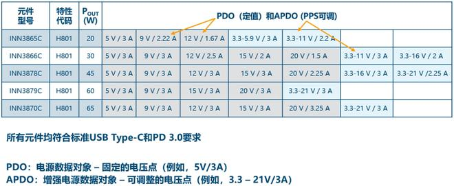